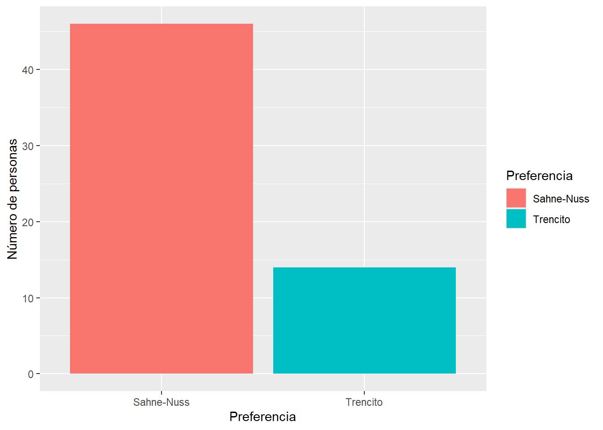
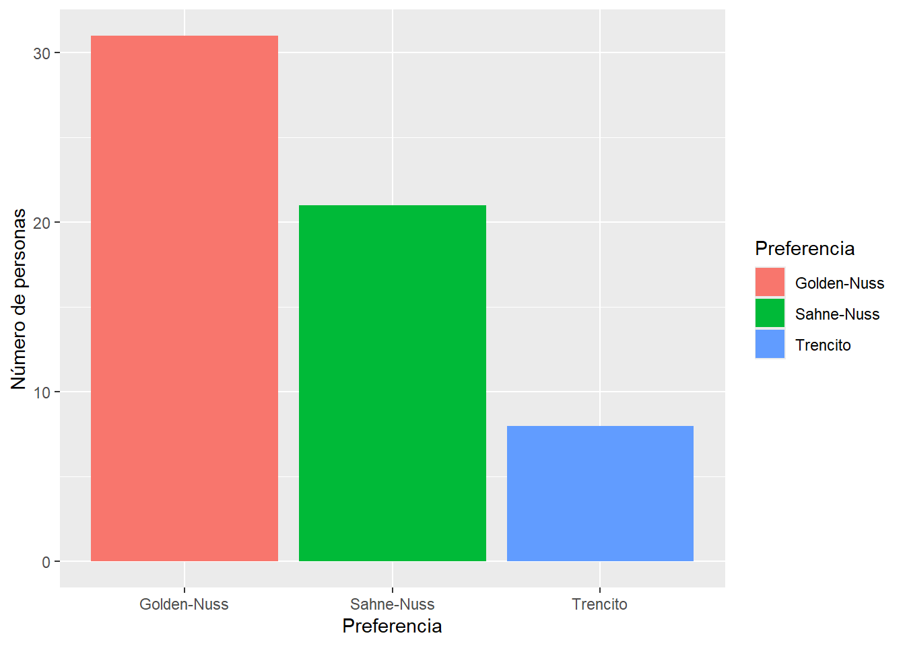
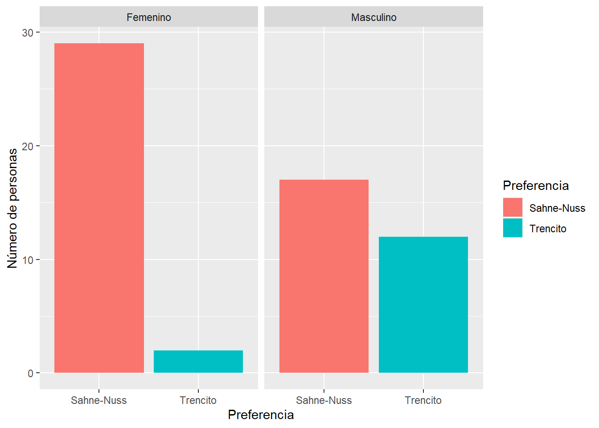
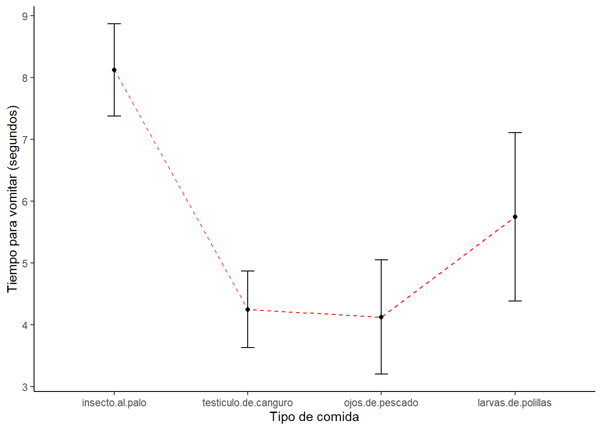

Capítulo 11 Otros análisis
En este capítulo vamos a revisar otros análisis estadísticos.
11.1 Análisis de proporciones
Imagina que estás analizando una base de datos dónde los participantes tenían que elegir entre dos tipos de chocolates.
Primero seteamos nuestro directorio de trabajo y graficar los datos. Cargamos la librería ggplot2 y otras librerías que nos serviran. Si no tienes estas librerías debes instalarlas. Luego importamos nuestro set de datos y lo miramos.
setwd(Sys.getenv("BOOKDOWN_PROJECT_PATH"))
prefsAB <- read.csv("data/prefsAB.csv")
prefsAB$Participante <- factor(prefsAB$Participante) # convertimos Participante a factor
prefsAB$Preferencia <- factor(prefsAB$Preferencia) # convertimos Preferencia a factor
head(prefsAB)## Participante Preferencia
## 1 1 Sahne-Nuss
## 2 2 Sahne-Nuss
## 3 3 Sahne-Nuss
## 4 4 Sahne-Nuss
## 5 5 Sahne-Nuss
## 6 6 Sahne-NussLuego realizamos un gráfico para visualizar diferencias en las preferencias.
library(ggplot2)
ggplot(prefsAB, aes(Preferencia, ..count..)) +
geom_bar(aes(fill = Preferencia), position = "dodge") +
ylab("Número de personas") 
Podemos usar la función xtabs para obtener una tabla de contigencia. Luego con la función chisq.test cálculamos la probabilidad que estas dos preferencias esten igualmente distribuidas (una prueba clásica de chi cuadrado).
## Preferencia
## Sahne-Nuss Trencito
## 46 14##
## Chi-squared test for given probabilities
##
## data: tabla.contingencia
## X-squared = 17.067, df = 1, p-value = 3.609e-05Otro test parecido, pero mas exacto es un test binomial.
##
## Exact binomial test
##
## data: tabla.contingencia
## number of successes = 46, number of trials = 60, p-value = 4.224e-05
## alternative hypothesis: true probability of success is not equal to 0.5
## 95 percent confidence interval:
## 0.6396172 0.8661627
## sample estimates:
## probability of success
## 0.7666667Ahora imagina que estás analizando una base de datos dónde los participantes tenían que elegir entre 3 tipos de chocolates.
Nuevamente, importamos primero nuestro set de datos.
prefsABC <- read.csv("data/prefsABC.csv")
prefsABC$Participante <- factor(prefsABC$Participante) # convertimos Participante a factor
prefsABC$Preferencia <- factor(prefsABC$Preferencia) # convertimos Preferencia a factor
head(prefsABC)## Participante Preferencia
## 1 1 Golden-Nuss
## 2 2 Golden-Nuss
## 3 3 Sahne-Nuss
## 4 4 Golden-Nuss
## 5 5 Golden-Nuss
## 6 6 Sahne-NussRealizamos el gráfico para visualizar diferencias en las preferencias.
library(ggplot2)
ggplot(prefsABC, aes(Preferencia, ..count..)) +
geom_bar(aes(fill = Preferencia), position = "dodge") +
ylab("Número de personas")
Podemos usar la función xtabs para obtener una tabla de contigencia. Luego con la función chisq.test cálculamos la probabilidad que estas dos preferencias esten igualmente distribuidas (una prueba clásica de chi cuadrado).
## Preferencia
## Golden-Nuss Sahne-Nuss Trencito
## 31 21 8##
## Chi-squared test for given probabilities
##
## data: tabla.contingencia
## X-squared = 13.3, df = 2, p-value = 0.001294Otro test parecido, pero mas exacto es un test multinomial.
## Warning: package 'XNomial' was built under R version 4.3.3##
## P value (Prob) = 0.0008024Luego que pesquisamos diferencias generales podemos hacer comparaciones más específicas entre pares de elementos. Podemos usar la función p.adjust para ajustar el valor de p para tener en cuenta el problema de comparaciones múltiples.
PrefA <- binom.test(sum(prefsABC$Preferencia == "Trencito"), nrow(prefsABC), p=1/3)
PrefB <- binom.test(sum(prefsABC$Preferencia == "Sahne-Nuss"), nrow(prefsABC), p=1/3)
PrefC <- binom.test(sum(prefsABC$Preferencia == "Golden-Nuss"), nrow(prefsABC), p=1/3)
p.adjust(c(PrefA$p.value, PrefB$p.value, PrefC$p.value), method="holm")## [1] 0.001659954 0.785201685 0.007446980En un siguiente nivel de complejidad imagina que ahora estás analizando una base de datos dónde los participantes tenían que elegir entre 2 tipos de chocolates, pero además se registró si era un hombre o una mujer.
Nuevamente, importamos primero nuestro set de datos.
prefsABsex <- read.csv("data/prefsABsex.csv")
prefsABsex$Participante <- factor(prefsABsex$Participante) # convertimos a factor
prefsABsex$Preferencia <- factor(prefsABsex$Preferencia) # convertimos a factor
prefsABsex$Genero <- factor(prefsABsex$Genero) # convertimos a factor
head(prefsABsex)## Participante Preferencia Genero
## 1 1 Sahne-Nuss Femenino
## 2 2 Sahne-Nuss Femenino
## 3 3 Sahne-Nuss Femenino
## 4 4 Sahne-Nuss Masculino
## 5 5 Sahne-Nuss Femenino
## 6 6 Sahne-Nuss MasculinoRealizamos el gráfico para visualizar diferencias en las preferencias.
library(ggplot2)
ggplot(prefsABsex, aes(Preferencia, ..count..)) +
geom_bar(aes(fill = Preferencia), position = "dodge") +
facet_wrap( ~ Genero) +
ylab("Número de personas")
Podemos usar la función xtabs para obtener una tabla de contigencia. Luego con la función chisq.test cálculamos la probabilidad que estas dos preferencias en función del género esten igualmente distribuidas.
## Genero
## Preferencia Femenino Masculino
## Sahne-Nuss 29 17
## Trencito 2 12##
## Pearson's Chi-squared test with Yates' continuity correction
##
## data: tabla.contingencia
## X-squared = 8.3588, df = 1, p-value = 0.003838Otro test parecido, pero mas exacto es un test de Fisher
##
## Fisher's Exact Test for Count Data
##
## data: tabla.contingencia
## p-value = 0.001877
## alternative hypothesis: true odds ratio is not equal to 1
## 95 percent confidence interval:
## 1.862023 101.026914
## sample estimates:
## odds ratio
## 9.844814Finalmente, imagina que ahora estás analizando una base de datos dónde los participantes tenían que elegir entre 3 tipos de chocolates, pero además se registró si era un hombre o una mujer.
Nuevamente, importamos primero nuestro set de datos.
prefsABCsex <- read.csv("data/prefsABCsex.csv")
prefsABCsex$Participante <- factor(prefsABCsex$Participante) # convertimos a factor
prefsABCsex$Preferencia <- factor(prefsABCsex$Preferencia) # convertimos a factor
prefsABCsex$Genero <- factor(prefsABCsex$Genero) # convertimos a factor
head(prefsABCsex)## Participante Preferencia Genero
## 1 1 Golden-Nuss Femenino
## 2 2 Golden-Nuss Masculino
## 3 3 Sahne-Nuss Masculino
## 4 4 Golden-Nuss Masculino
## 5 5 Golden-Nuss Masculino
## 6 6 Sahne-Nuss FemeninoRealizamos el gráfico para visualizar diferencias en las preferencias.
library(ggplot2)
ggplot(prefsABCsex, aes(Preferencia, ..count..)) +
geom_bar(aes(fill = Preferencia), position = "dodge") +
facet_wrap( ~ Genero) +
ylab("Número de personas")
Podemos usar la función xtabs para obtener una tabla de contigencia. Luego con la función chisq.test cálculamos la probabilidad que estas dos preferencias en función del género esten igualmente distribuidas.
## Genero
## Preferencia Femenino Masculino
## Golden-Nuss 11 20
## Sahne-Nuss 15 6
## Trencito 3 5## Warning in chisq.test(tabla.contingencia): Chi-squared approximation may be incorrect##
## Pearson's Chi-squared test
##
## data: tabla.contingencia
## X-squared = 6.9111, df = 2, p-value = 0.03157Otro test parecido, pero mas exacto es un test de Fisher
##
## Fisher's Exact Test for Count Data
##
## data: tabla.contingencia
## p-value = 0.03261
## alternative hypothesis: two.sidedLuego que pesquisamos diferencias generales podemos hacer comparaciones más específicas entre pares de elementos.
Primero, podemos hacer test binomiales sólo para los hombres. Hay diferencias significativas entre las preferencias de los hombres?
male_A <- binom.test(sum(prefsABCsex[prefsABCsex$Genero == "Masculino",]$Preferencia == "Trencito"),
nrow(prefsABCsex[prefsABCsex$Genero == "Masculino",]), p=1/3)
male_B <- binom.test(sum(prefsABCsex[prefsABCsex$Genero == "Masculino",]$Preferencia == "Sahne-Nuss"),
nrow(prefsABCsex[prefsABCsex$Genero == "Masculino",]), p=1/3)
male_C <- binom.test(sum(prefsABCsex[prefsABCsex$Genero == "Masculino",]$Preferencia == "Golden-Nuss"),
nrow(prefsABCsex[prefsABCsex$Genero == "Masculino",]), p=1/3)
pvalues <- p.adjust(c(male_A$p.value, male_B$p.value, male_C$p.value), method="holm")
formatC(pvalues, format = "f", digits = 6)## [1] "0.109474" "0.126622" "0.001297"Segundo, podemos hacer test binomiales sólo para las mujeres. Hay diferencias significativas entre las preferencias de las mujeres?
female_A <- binom.test(sum(prefsABCsex[prefsABCsex$Genero == "Femenino",]$Preferencia == "Trencito"),
nrow(prefsABCsex[prefsABCsex$Genero == "Femenino",]), p=1/3)
female_B <- binom.test(sum(prefsABCsex[prefsABCsex$Genero == "Femenino",]$Preferencia == "Sahne-Nuss"),
nrow(prefsABCsex[prefsABCsex$Genero == "Femenino",]), p=1/3)
female_C <- binom.test(sum(prefsABCsex[prefsABCsex$Genero == "Femenino",]$Preferencia == "Golden-Nuss"),
nrow(prefsABCsex[prefsABCsex$Genero == "Femenino",]), p=1/3)
pvalues <- p.adjust(c(female_A$p.value, female_B$p.value, female_C$p.value), method="holm")
formatC(pvalues, format = "f", digits = 6)## [1] "0.027033" "0.094478" "0.693970"